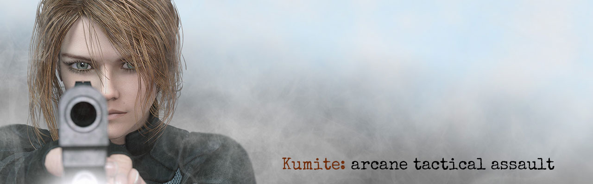

Kumite
======
Third-person stealth action game built using the fork of [Tesseract](http://tesseract.gg) game engine.
!!! Tip
Documentation uses slightly modified [Markdeep](https://casual-effects.com/markdeep) so it should be well readable in any
half decent browser.
Documentation
=============
## Asset pipeline
* [Supported model formats](Engine/Models.md.html)
* Tools
* [Font tool](Tools/Tessfont.md.html)
* Model converters: [FBX2IQE](Tools/FBX2IQE.md.html), [IQM compiler](Tools/IQM.md.html)
## Engine
* [LOD support](Engine/LOD.md.html)